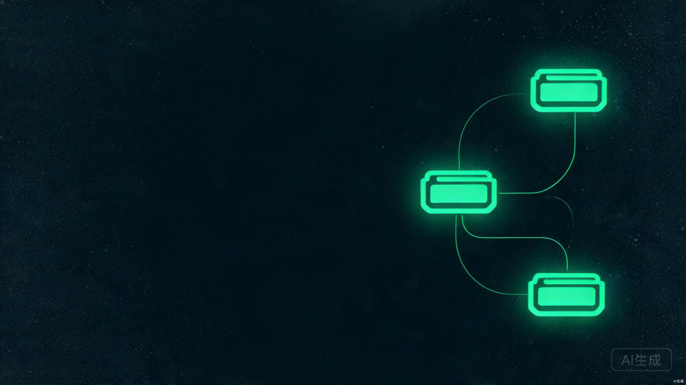
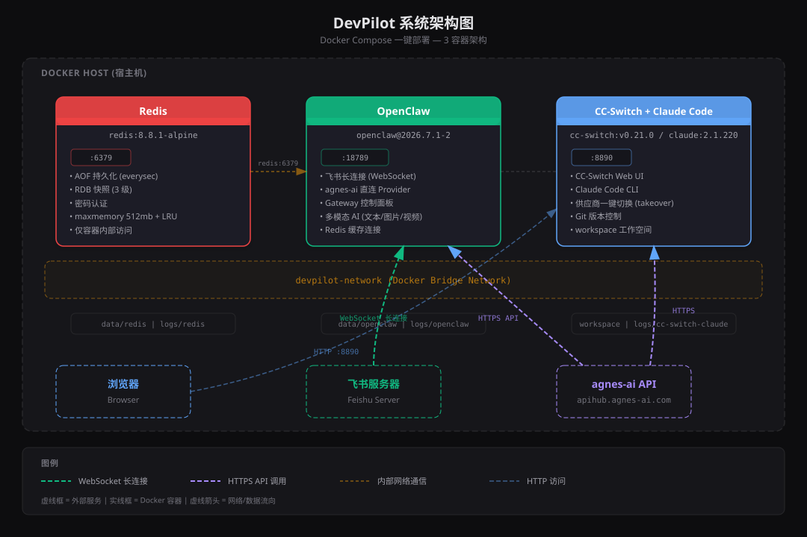
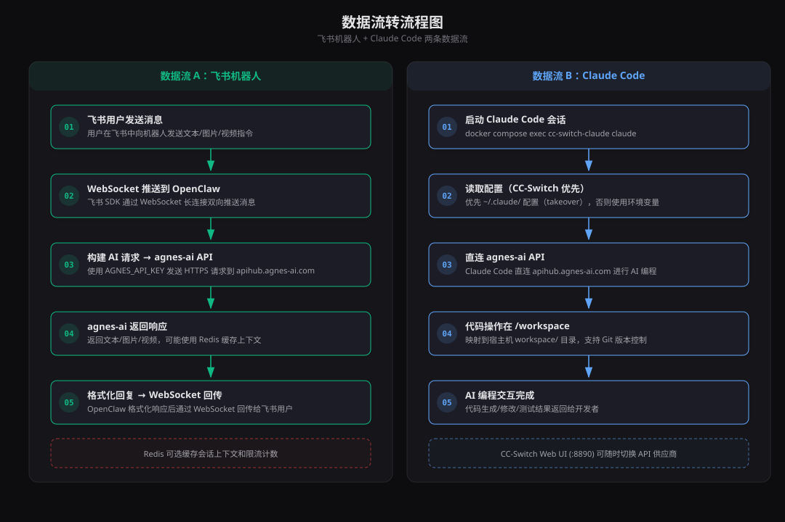
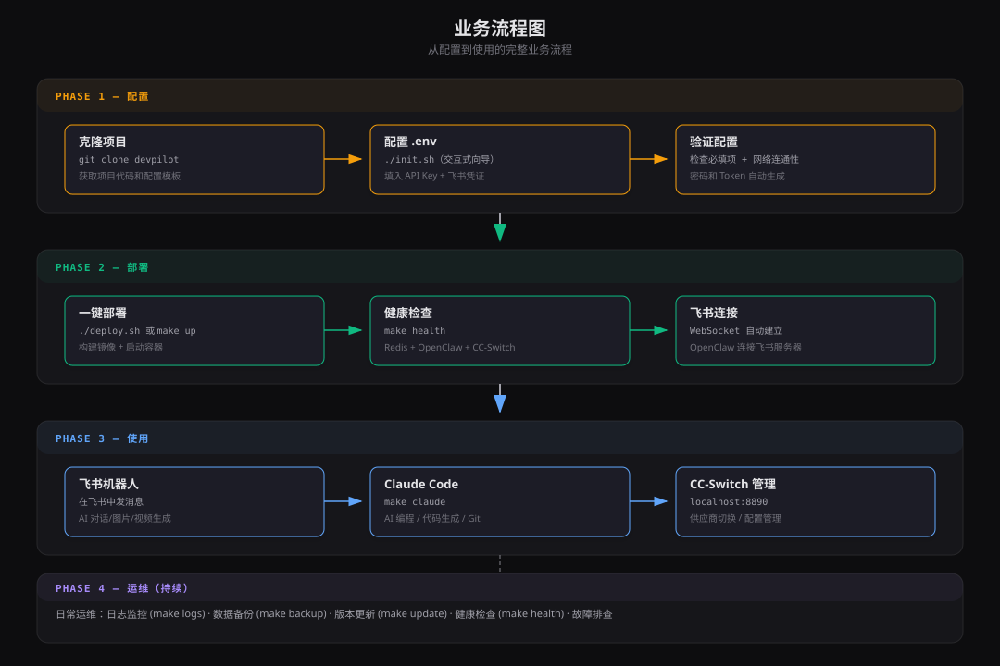
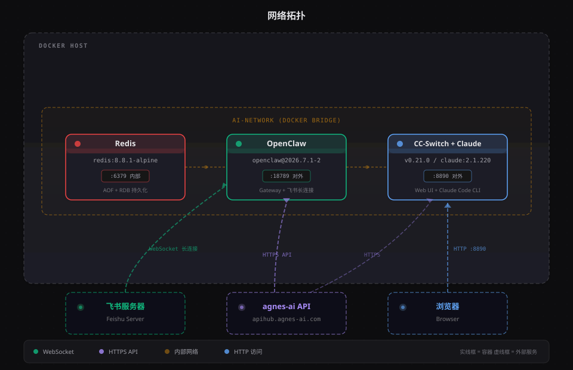
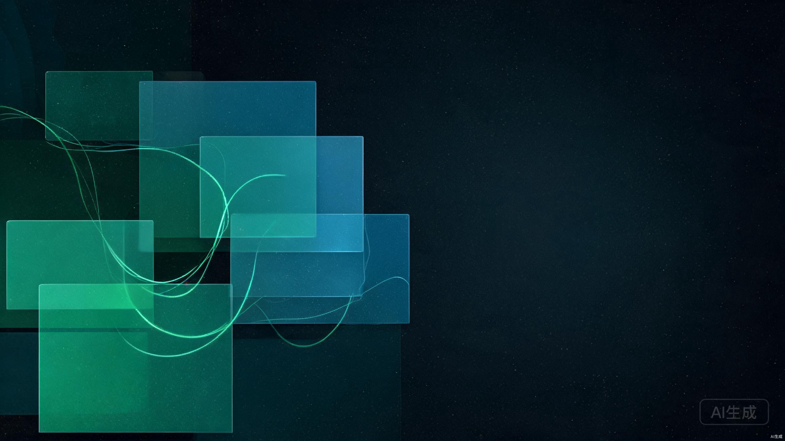

Docker Compose 一键部署 AI 开发环境
DevPilot 是一套基于 Docker Compose 的 AI 开发环境一键部署方案。它将飞书 AI 机器人、Claude Code 编程助手、Redis 缓存整合为 3 个 Docker 容器，通过一个 .env 文件集中管理所有配置，运行 ./deploy.sh 即可完成全部部署。
通过 OpenClaw 接入飞书 WebSocket 长连接，用户在飞书中发消息即可获得 AI 回复，支持文本对话、图片生成、视频生成。无需公网 IP 或回调地址。
容器内预装 Claude Code CLI，通过环境变量或 CC-Switch 管理的供应商配置直连 agnes-ai API。支持交互式编程、代码生成、Git 版本控制。
CC-Switch Web UI 提供可视化供应商管理，支持添加多个 API 供应商并一键切换，通过 takeover 模式覆盖 Claude Code 配置文件。
Redis 提供 AOF 每秒刷盘 + RDB 三级快照双重持久化，密码认证保护，仅容器内部可访问。数据存储在宿主机 data/redis/ 目录。
| 组件 | 版本 | 来源 | 更新方式 |
|---|---|---|---|
| Redis | 8.8.1-alpine | Docker Hub | 修改 .env 中镜像标签 |
| Node.js | 22.23.1-bookworm | Docker Hub | 修改 NODE_IMAGE_TAG |
| OpenClaw | 2026.7.1-2 | npm | 修改 OPENCLAW_VERSION |
| CC-Switch Web | v0.21.0 | GitHub Releases | 修改 CC_SWITCH_VERSION |
| Claude Code | 2.1.220 | npm | 修改 CLAUDE_CODE_VERSION |
传统飞书机器人需要配置 Webhook 回调地址，要求公网可访问的 HTTPS 域名。DevPilot 采用飞书 SDK 的长连接模式（WebSocket），OpenClaw 启动时主动建立与飞书服务器的 WebSocket 连接，消息通过该连接双向推送，无需公网 IP。
无需公网 IP 和端口映射 / 无需 HTTPS 证书和域名 / 消息推送延迟更低 / 配置更简单（仅需 App ID 和 App Secret）
agnes-ai 提供 OpenAI 兼容的 API 接口，地址为 https://apihub.agnes-ai.com/v1。OpenClaw 和 Claude Code 都通过该接口调用 AI 模型，使用 API Key 认证。支持的模型包括：
agnes-2.0-flash — 文本对话，256K 上下文窗口agnes-image-2.1-flash — 图片生成agnes-video-v2.0 — 视频生成CC-Switch Web 是一个供应商配置管理工具（不是代理服务器）。它通过覆盖 Claude Code 的配置文件（~/.claude/settings.json）来实现供应商切换，而不是作为中间代理转发请求。这保证了 Claude Code 直连 API 的性能，同时提供了可视化的配置管理界面。
Claude Code 有两种 API 接入方式：
| 对比项 | 直连模式（fallback） | CC-Switch 配置（takeover） |
|---|---|---|
| 配置来源 | 环境变量 | CC-Switch 写入 ~/.claude/ |
| 切换方式 | 改环境变量重启容器 | Web UI 一键切换 |
| 多供应商 | 不支持 | 支持 |
| 适用场景 | 快速验证 | 正式开发 |
Redis 在系统中作为可选缓存使用。OpenClaw 配置了 Redis 连接 URL，可用于缓存会话上下文、限流计数等。Redis 不对外暴露端口（仅容器内部访问），通过 AOF + RDB 双重持久化保证数据安全。
Docker Compose 定义了 3 个服务和一个桥接网络 devpilot-network。服务间通过容器名进行 DNS 解析（如 OpenClaw 连接 Redis 使用 redis:6379）。启动顺序通过 depends_on 和 condition: service_healthy 控制：Redis 健康后启动 OpenClaw，OpenClaw 启动后启动 CC-Switch 容器。


系统由 3 个 Docker 容器组成，通过 devpilot-network 桥接网络互联：
docker compose exec 交互使用
AGNES_API_KEY 构建 AI 请求，发送到 agnes-ai APIdocker compose exec cc-switch-claude claude 启动 Claude Code~/.claude/ 配置，否则使用环境变量/workspace（映射到宿主机 workspace/）中进行

devpilot/
├── docker-compose.yml # 主编排文件
├── Makefile # 快捷命令
├── deploy.sh # 一键部署脚本
├── .env / .env.example # 环境变量
├── images/ # 架构图（SVG）
├── conf/ # 配置文件
│ ├── redis/redis.conf # Redis 持久化配置
│ ├── openclaw/
│ │ ├── openclaw.default.json # OpenClaw 配置模板
│ │ └── init-openclaw.sh # 初始化脚本
│ └── cc-switch-claude/
│ └── start.sh # 合体容器启动脚本
├── dockerfiles/ # Dockerfile
│ ├── openclaw/Dockerfile
│ └── cc-switch-claude/Dockerfile
├── cicd/ # CI/CD 配置
│ ├── ci/ # CI (GitHub/Gitee/GitLab)
│ └── cd/ # CD (Docker/K8s)
├── data/ # 持久化数据（运行时）
├── logs/ # 日志（运行时）
├── backups/ # 备份文件
└── workspace/ # Claude Code 工作空间| 项目 | 最低要求 | 推荐 |
|---|---|---|
| 操作系统 | Linux / macOS / Windows（支持 Docker） | Ubuntu 22.04 LTS |
| Docker Engine | 24.0 | 27.x 最新版 |
| Docker Compose | v2.20 | v2.30+ |
| 内存 | 4 GB | 8 GB |
| 磁盘 | 5 GB | 20 GB+ |
| 网络 | 需访问 apihub.agnes-ai.com、github.com、registry.npmjs.org | |
所有配置集中在 .env 文件中，Docker Compose 启动时自动读取。推荐使用配置向导：
# 方式 1（推荐）：交互式配置向导
./init.sh
# 只需填写 3 个必填项（API Key + 飞书凭证），密码自动生成
# 方式 2：手动编辑
cp .env.example .env
vim .env| 类别 | 变量 | 说明 |
|---|---|---|
| 必填 | AGNES_API_KEY | agnes-ai API 密钥 |
| 必填 | FEISHU_APP_ID | 飞书应用 App ID |
| 必填 | FEISHU_APP_SECRET | 飞书应用 App Secret |
| 自动 | REDIS_PASSWORD | 首次部署自动生成 32 位随机密码 |
| 自动 | OPENCLAW_GATEWAY_TOKEN | 首次部署自动生成 32 位随机 Token |
| 可选 | AGNES_BASE_URL | API 地址（默认 agnes-ai 官方） |
| 可选 | OPENCLAW_GATEWAY_PORT | Gateway 端口（默认 18789） |
| 可选 | CC_SWITCH_WEB_PORT | Web UI 端口（默认 8890） |
| 可选 | NODE_IMAGE_TAG | Node.js 版本（默认 22.23.1） |
| 可选 | TZ | 时区（默认 Asia/Shanghai） |
运行 ./init.sh 后，只需填写 3 个必填项（API Key + 飞书凭证），Redis 密码和 Gateway Token 会自动生成 32 位随机字符串。整个过程不到 1 分钟。
修改版本号（OPENCLAW_VERSION 等）后需加 --build 重新构建：docker compose up -d --build
# 方式 1：使用部署脚本（推荐，含环境检查和健康等待）
./deploy.sh
# 方式 2：直接使用 docker compose
docker compose up -d --build
# 方式 3：使用 Makefile
make up在飞书开放平台创建应用时，确保以下配置：
im:message（接收消息）、im:message:send_as_bot（发送消息）项目支持三种部署模式，通过 Docker Compose profiles 实现：
| 模式 | 启动容器 | 命令 | 适用场景 |
|---|---|---|---|
| full | Redis + OpenClaw + CC-Switch | make up | 完整功能（默认） |
| bot | Redis + OpenClaw | make up-bot | 仅需飞书 AI 机器人 |
| dev | CC-Switch + Claude Code | make up-dev | 仅需编程助手 |
docker-compose.yml 定义了 3 个服务，使用 YAML 锚点 x-logging 统一日志配置（10MB 轮转，保留 3 个文件）。每个容器配置了：
项目内置完整的 CI/CD 配置，位于 cicd/ 目录：
| 平台 | 配置文件 | 功能 |
|---|---|---|
| GitHub | cicd/ci/github/workflows/ci.yml | 构建镜像 + 推送 GHCR + Trivy 安全扫描 |
| Gitee | cicd/ci/gitee/workflows/ci.yml | 构建镜像 + 适配 Gitee Go 语法 |
| GitLab（自建） | cicd/ci/gitlab/.gitlab-ci.yml | DinD 构建 + 推送 GitLab Registry |
| 方式 | 路径 | 说明 |
|---|---|---|
| Docker Compose（本机） | cicd/cd/docker-local/deploy.sh | 本地 docker compose 部署 |
| Docker Run（本机） | cicd/cd/docker-local/docker-run.sh | 无 compose，直接 docker run |
| Docker（远程） | cicd/cd/docker-remote/deploy-remote.sh | 通过 DOCKER_HOST 连接远程 Docker |
| Kubernetes 原生 | cicd/cd/k8s/manifests/ | K8s YAML 清单（8 个文件） |
| Helm Chart | cicd/cd/k8s/helm/devpilot/ | Helm 模板化部署 |
# 交互式选择部署方式
bash cicd/scripts/deploy.sh通过 Makefile 提供常用操作快捷命令：
make up # 构建并启动所有服务
make down # 停止所有服务（保留数据）
make restart # 重启所有服务
make logs # 查看所有服务日志（实时）
make ps # 查看容器状态
make health # 健康检查所有服务
make claude # 启动 Claude Code
make shell # 进入合体容器 bash
make backup # 备份 Redis 数据和 OpenClaw 配置
make help # 查看所有可用命令每个容器的日志通过 Docker json-file 驱动管理，配置了自动轮转（单文件 10MB，最多保留 3 个文件）。查看日志：
# 查看所有服务日志
docker compose logs -f
# 查看特定服务日志
docker compose logs -f openclaw
docker compose logs -f cc-switch-claude
docker compose logs -f redis
# 查看最近 100 行
docker compose logs --tail 100 openclaw
# 过滤飞书相关日志
docker compose logs openclaw | grep -i "feishu\|websocket"宿主机日志目录：logs/redis/、logs/openclaw/、logs/cc-switch-claude/
make backup
# 备份文件保存在 backups/ 目录# Redis 数据
docker compose exec redis redis-cli -a "$REDIS_PASSWORD" BGSAVE
cp data/redis/dump.rdb backups/dump-$(date +%Y%m%d).rdb
# OpenClaw 配置
cp data/openclaw/openclaw.json backups/openclaw-$(date +%Y%m%d).json
# 整体数据目录
tar czf backups/devpilot-$(date +%Y%m%d).tar.gz data/ workspace/# 停止服务
docker compose down
# 恢复备份
cp backups/dump-20260729.rdb data/redis/dump.rdb
cp backups/openclaw-20260729.json data/openclaw/openclaw.json
# 重新启动
docker compose up -d| 服务 | 检查方式 | 期望结果 |
|---|---|---|
| Redis | redis-cli -a $REDIS_PASSWORD ping | PONG |
| OpenClaw | curl http://localhost:18789/healthz | 200 OK |
| CC-Switch Web | curl http://localhost:8890 | HTML 内容 |
| Claude Code | claude --version | 2.1.220 |
# 1. 编辑 .env 修改版本号
vim .env
# 例如: OPENCLAW_VERSION=2026.7.2
# 2. 重新构建并启动
make update
# 或: docker compose up -d --build
# 3. 验证更新
make health# 检查飞书连接日志
docker compose logs openclaw | grep -i "feishu\|websocket\|error"
# 检查 OpenClaw 配置
docker compose exec openclaw cat /data/openclaw/openclaw.json | grep -A 10 feishu
# 重新生成配置并重启
rm data/openclaw/openclaw.json
docker compose restart openclaw# 检查环境变量
docker compose exec cc-switch-claude env | grep ANTHROPIC
# 测试 API 连通性
docker compose exec cc-switch-claude curl -s https://apihub.agnes-ai.com/v1/models \
-H "Authorization: Bearer $ANTHROPIC_API_KEY" | head -20
# 检查 CC-Switch 配置
docker compose exec cc-switch-claude cat ~/.claude/settings.json# 检查 Redis 容器状态
docker compose ps redis
# 确认状态为 Up (healthy)
# 测试连接
docker compose exec redis redis-cli -a "$REDIS_PASSWORD" ping
# 检查密码一致性
grep REDIS_PASSWORD .env
docker compose exec openclaw env | grep REDIS| 错误 | 原因 | 解决方案 |
|---|---|---|
| npm install 失败 | npm 版本不兼容 | 确认 NODE_IMAGE_TAG 为 22.23.1-bookworm |
| curl 下载失败 | GitHub 下载地址变化 | 检查 Dockerfile 中 CC-Switch 下载 URL |
| permission denied | Windows CRLF 换行符 | Dockerfile 已含 sed 修复，确认未丢失 |
| network unreachable | 网络问题 | 检查 Docker 网络和 DNS 配置 |
.env 文件包含所有密钥，已通过 .gitignore 排除，不要提交到版本库data/ 目录im:message + im:message:send_as_bot）make logs-openclaw）| 类型 | 触发方式 | 说明 |
|---|---|---|
| 文本对话 | 发送文本消息 | 调用 agnes-2.0-flash，支持多轮对话 |
| 图片生成 | 发送图片生成指令 | 调用 agnes-image-2.1-flash |
| 视频生成 | 发送视频生成指令 | 调用 agnes-video-v2.0 |
# 进入 Claude Code 交互式会话
make claude
# 或: docker compose exec cc-switch-claude claude
# 在会话中输入指令
> 帮我创建一个 Python Flask 项目
> 读取 workspace 下的 README.md 并总结
> 在 workspace 中创建 Git 仓库并提交代码# 进入合体容器的 bash
make shell
# 在 workspace 目录初始化 Git 仓库
cd /workspace
git init
git config user.name "Your Name"
git config user.email "your@email.com"
# 克隆项目
git clone https://github.com/your/repo.git
# 启动 Claude Code
claude# 查看 Claude Code 配置
docker compose exec cc-switch-claude cat ~/.claude/settings.json
# 查看环境变量
docker compose exec cc-switch-claude env | grep ANTHROPIChttp://localhost:8890（默认用户名 admin，密码首次运行自动生成，存储在 ~/.cc-switch/web_password）https://apihub.agnes-ai.com/v1，API Key 从 .env 文件获取~/.claude/settings.json）docker compose exec cc-switch-claude cat ~/.claude/settings.json在 CC-Switch Web UI 中可添加多个 API 供应商（如 agnes-ai、OpenAI、其他兼容 API），通过一键切换选择当前生效的供应商。每个供应商独立配置 Base URL、API Key 和模型映射。
| 命令 | 说明 |
|---|---|
make help | 显示所有可用命令 |
make init | 交互式配置向导（生成 .env） |
make up | 构建并启动所有服务 |
make up-bot | 仅启动飞书机器人（Redis + OpenClaw） |
make up-dev | 仅启动开发环境（CC-Switch + Claude Code） |
make down | 停止所有服务（保留数据） |
make restart | 重启所有服务 |
make logs | 查看所有服务日志 |
make logs-openclaw | 仅查看 OpenClaw 日志 |
make ps | 查看容器状态 |
make health | 健康检查所有服务 |
make claude | 启动 Claude Code |
make shell | 进入合体容器 bash |
make redis-cli | 进入 Redis CLI |
make build | 构建所有镜像 |
make rebuild | 强制重新构建（--no-cache） |
make backup | 备份数据 |
make clean | 删除所有数据和日志（危险） |
make reset-openclaw | 重置 OpenClaw 配置 |

场景：一个 10 人开发团队需要一个共享的 AI 助手，用于日常技术问答和代码审查辅助。
.env（填入飞书和 agnes-ai 凭证）./deploy.sh 完成部署docker compose exec 使用 Claude Codecrontab 每日执行 make backupdocker compose logs 或日志收集工具.env 中版本号后 make update场景：通过 GitHub Actions 自动构建镜像并部署到远程服务器。
cicd/ci/github/workflows/ci.yml 复制到 .github/workflows/cicd/cd/docker-remote/deploy-remote.sh 在远程服务器上拉取新镜像并重启场景：在 K8s 集群上部署 DevPilot，实现高可用和弹性伸缩。
# 1. 修改 values.yaml 配置
vim cicd/cd/k8s/helm/devpilot/values.yaml
# 2. 创建命名空间和 Secret
kubectl create namespace devpilot
kubectl create secret generic devpilot-secrets \
--namespace devpilot \
--from-literal=agnes-api-key=sk-xxxx \
--from-literal=feishu-app-id=cli-xxxx \
--from-literal=feishu-app-secret=xxxx \
--from-literal=redis-password=xxxx \
--from-literal=gateway-token=xxxx
# 3. Helm 部署
helm install devpilot cicd/cd/k8s/helm/devpilot/ \
--namespace devpilot
# 4. 检查部署状态
kubectl get pods -n devpilot场景：同时使用 agnes-ai 和其他兼容 API 供应商，根据需求切换。
CC-Switch 通过覆盖 ~/.claude/settings.json 实现切换，不需要重启容器。切换后启动新的 Claude Code 会话即可使用新供应商。
场景：开发者将 DevPilot 作为日常开发环境使用。
# 1. 在 workspace 中克隆工作项目
docker compose exec cc-switch-claude bash
cd /workspace
git clone https://github.com/my-team/my-project.git
cd my-project
# 2. 启动 Claude Code 进行编程
claude
> 分析这个项目的架构
> 为 src/auth.ts 添加单元测试
> 修复 src/api/handler.ts 中的 bug
# 3. Git 提交
git add -A
git commit -m "feat: add unit tests and fix auth bug"
git push同时，飞书机器人可用于团队非编程场景的 AI 问答，如文档撰写、方案讨论等。